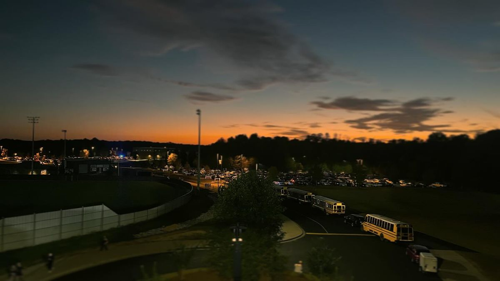
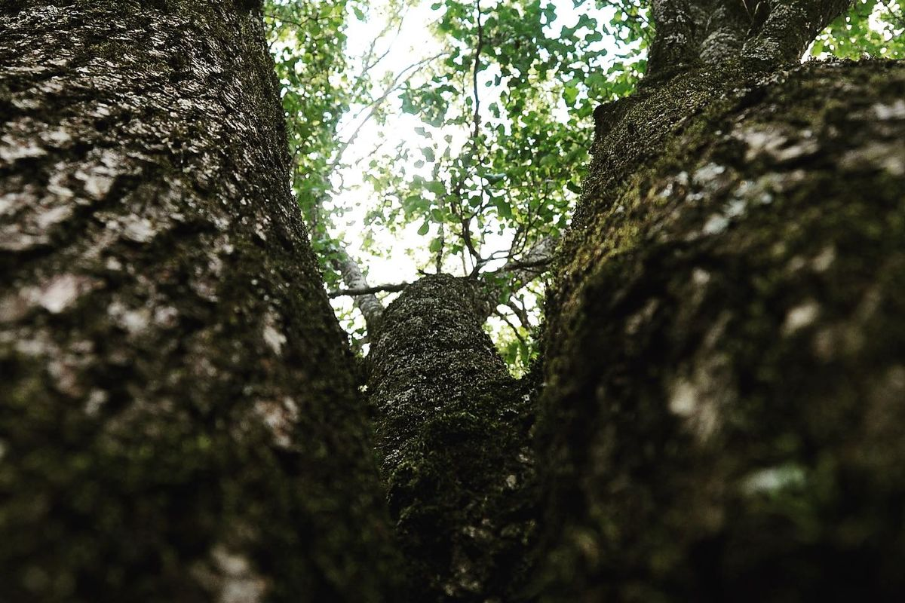
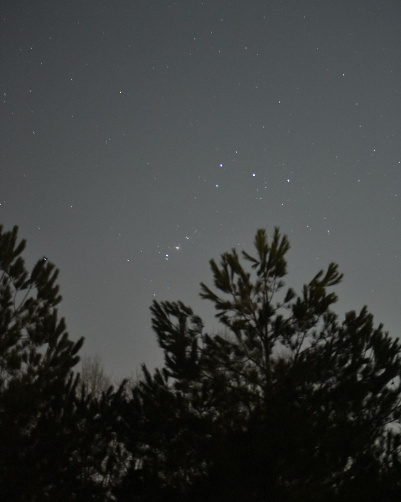
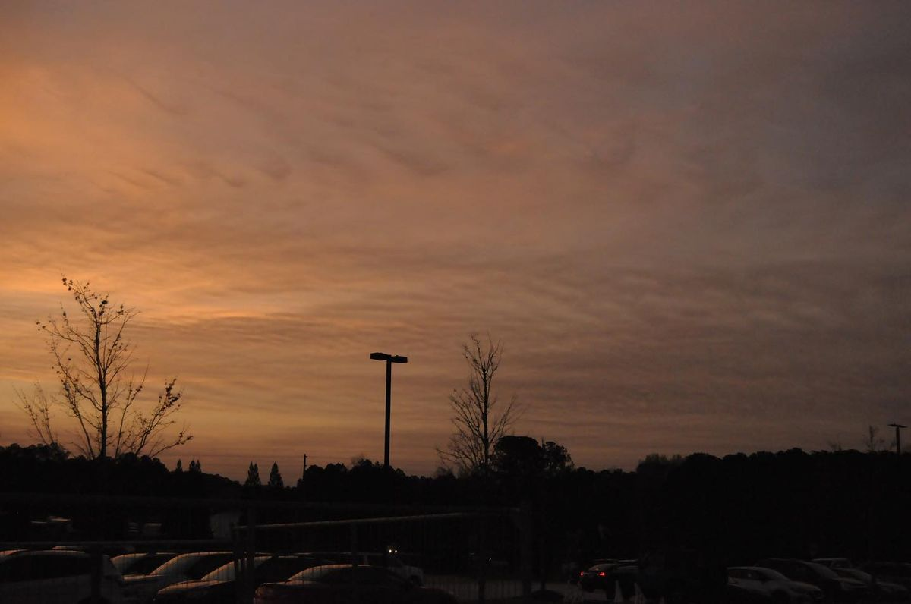
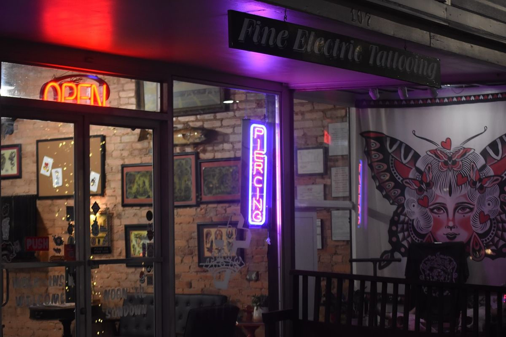
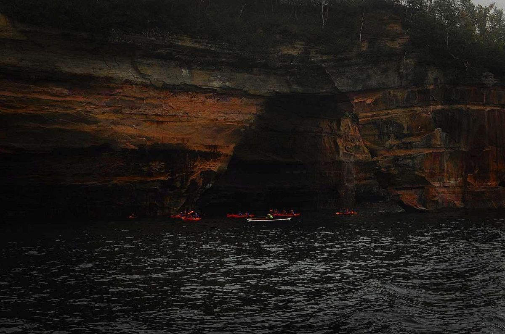
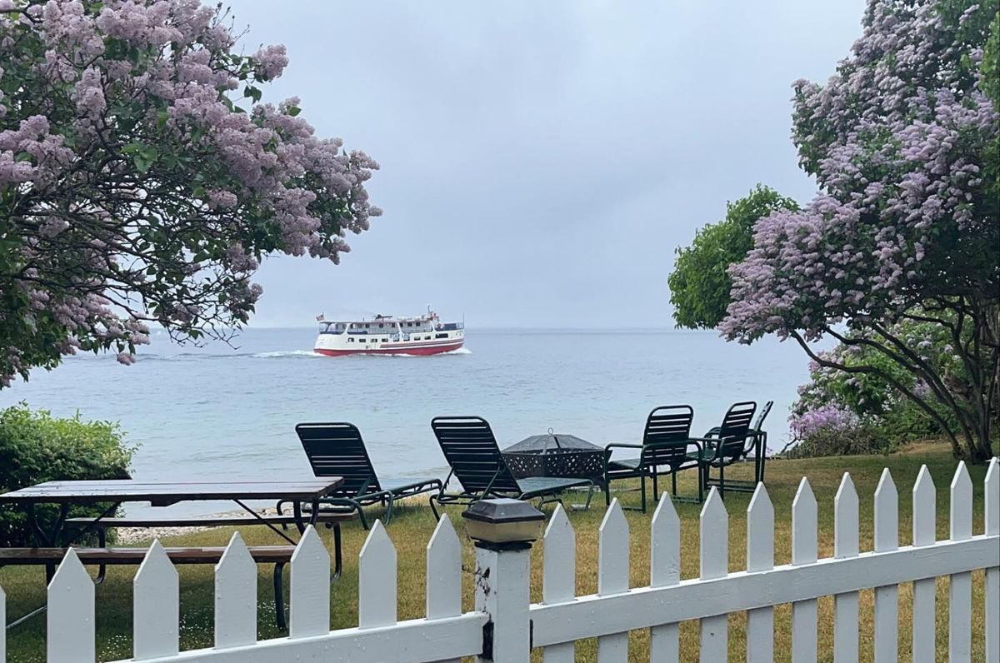
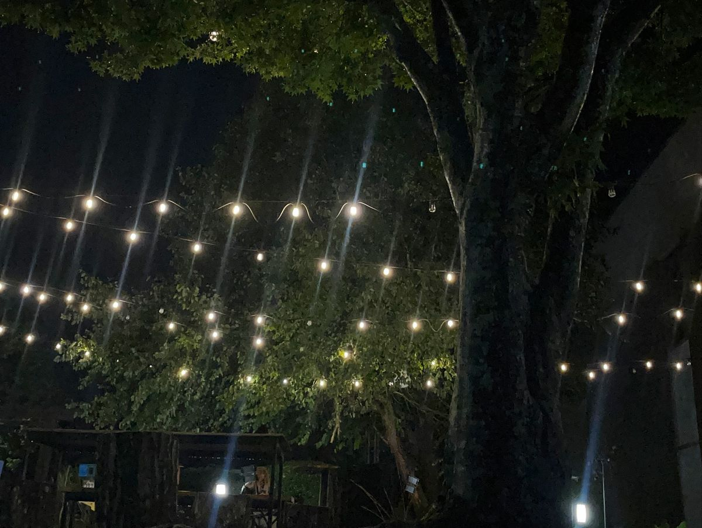

Photography
Landscape and portrait photography from Walton County, Georgia — see the work at @t1.research.
Before T1 Research & Development was a web and tech business, it was a camera. I shoot landscapes and portraits around Walton County — golden hour over Georgia fields, quiet streets, and the people who live here.
Every photo on this site is mine, from @t1.research on Instagram. Portrait sessions and prints are available — get in touch and we'll plan one.
What's included
- Landscape photography — Georgia fields, lakes, and light
- Portrait sessions — individuals, graduates, families
- Golden-hour shoots around Walton County
- Prints available of any photo here
- See the latest work at @t1.research
Selected work








See more at @t1.research on Instagram.
Questions
Yes — individuals, graduates, and families. Get in touch and we'll plan a time and place.
Yes. Contact me about prints of any photo on this site or on @t1.research.